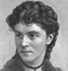

Alison Booth
Hanaford, [Mrs.] Phebe Ann [Coffin]. Women of the Century / Boston Russell, 1876; 1877. Title variant (probable): Daughters of America; or, Women of the Century. Augusta, ME: True; Knowles; Des Moines, IA: Co-operative, 1882. Augusta, ME: True; Cincinnati, OH: Forshee & McMakin; Appleton; Alanson; Boston: Russell, 1883. Des Moines, IA: Woodruff, 1884. Augusta, ME: True, 1889.
Approx. 160 subjects. As in Ellet's more exclusive Queens of American Society in the same decade, chapter subheadings in Daughters of America include many general topics and many subjects' names. The exclusively female list includes Hannah Duston; Deborah Samson; Martha Washington; Lydia Maria Child; Dorothea L. Dix; Clara Barton; Sarah Hale; Margaret Fuller; Julia Ward Howe; Lydia H. Sigourney; Maria Mitchell; Harriet Hosmer; Mary A. Livermore; Frances E. W. Harper; Sojourner Truth; Elizabeth Cady Stanton; Susan B. Anthony; Frances E. Willard; Phebe A. Hanaford [herself]; Ann H. Judson; Sarah B. Judson; Mary Lyon; Charlotte Cushman; and numerous other women by occupation or type.
-
 Ida Lewis
Ida Lewis -
Miss Emily Sartain
-
Mary A. Livermore
-
 Maggie Newton Van Colt
Maggie Newton Van Colt -
 Louise Woodworth Foss
Louise Woodworth Foss -
 D. D. Taylor
D. D. Taylor
Search OCLC WorldCat for this title.
Search Google Books for this title.